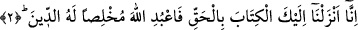
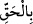

katından indirilmiştir.” Yâni müşriklerin “Muhammed onu kendiliğinden uydurdu”
dedikleri gibi O’ndan başkası tarafından indirilmemiştir.
Mânânın şu şekilde olduğu da söylenmiştir: Bu kitap Allah tarafından indirilmiştir,
öyle ise onu dinleyin ve onunla amel edin. Çünkü o, Aziz bir Rab tarafından, aziz bir
kula, aziz bir meleğin lisanıyla, aziz bir ümmet hakkında, aziz vakitlerde indirilen aziz
bir kitaptır.
Burada özellikle izzet ve hikmet vasıflarının zikredilmesi, hiçbir karşı koyucu ve
engelleyici olmaksızın Kur’an hükümlerinin cârî olması, emir ve yasaklarının
yürürlükte bulunması ve içerdiği her şeyin sonsuz hikmetlere dayanması hasebiyle bu
iki vasfın izlerinin Kitap’ta zuhur edip görünmesi sebebiyledir.
Kâşifî şöyle der: “el-Azîz” takdir hususunda galip/güçlü olan Allah; “el-Hakîm” ise
tedbîrde ve idârede alîm/bilen demektir.”
Fethu’r-Rahmân’da da şöyle geçer: “Kudreti îtibarıyle azîz; eşsiz, yaratışı îtibarıyle
ise hakîmdir.”
2. (Rasûlüm!) Şüphesiz ki Kitab’ı sana hak olarak indirdik. O halde sen de dini
Allah’a has kılarak (ihlâs ile) kulluk et.
“(Rasûlüm!) Şüphesiz ki Kitab’ı sana hak olarak indirdik.” Bu ifâde ile indirilen
Kitab’ın durumu ve onun Allah katından olduğu açıklandıktan sonra kendisine Kitap
indirilenin durumu ve O’nun ne yapması gerektiği beyân edilmeye başlanıyor. Şu halde
burada bir tekrar yoktur. Zamir kullanacak yerde “Kitap” kelimesinin açıkça
zikredilmesi, onun büyüklüğünü ortaya koymak ve ona fazlasıyla önem verildiğini
göstermek içindir.
“daki “bâ” harf-i cerri, ya “ (indirdik)” ifâdesine müteallıktır; yâni hak
sebebiyle, hakkı isbat etmek ve ortaya çıkarmak için indirdik demektir. Ya da “ daki
daki
azamet nûnundan hâl olan mahzuf bir kelimeye müteallıktır; yâni bu hususta hak üzere
olduğumuz halde onu sana indirdik demektir. Yahut da “tan hâldir ki o kitabı sana,
hak ve doğru ile dolu bir kitap olduğu halde indirdik, demektir. Yâni, onun içindeki
herşey haktır, hakkında şüphe yoktur, kendisiyle amel etmeyi kesin olarak gerektirir.
et-Te’vîlâtü’n-Necmiyye’de şöyle der: “Yâni Kitap Hak’tan indi, hak ile indi ve
hakkın gereğini yapana (muhik) indi.”
Burhânü’l-Kur’ân’da der ki: “Allah Teâlâ’nın Hz. Peygamber (s.a.)’e “(Biz sana indirdik)” ifâdesiyle hitabettiği her yerde bir mükellefiyet vardır. “ (Biz senin üzerine indirdik)” ifâdesiyle hitabettiği zaman ise bir hafifletme vardır.